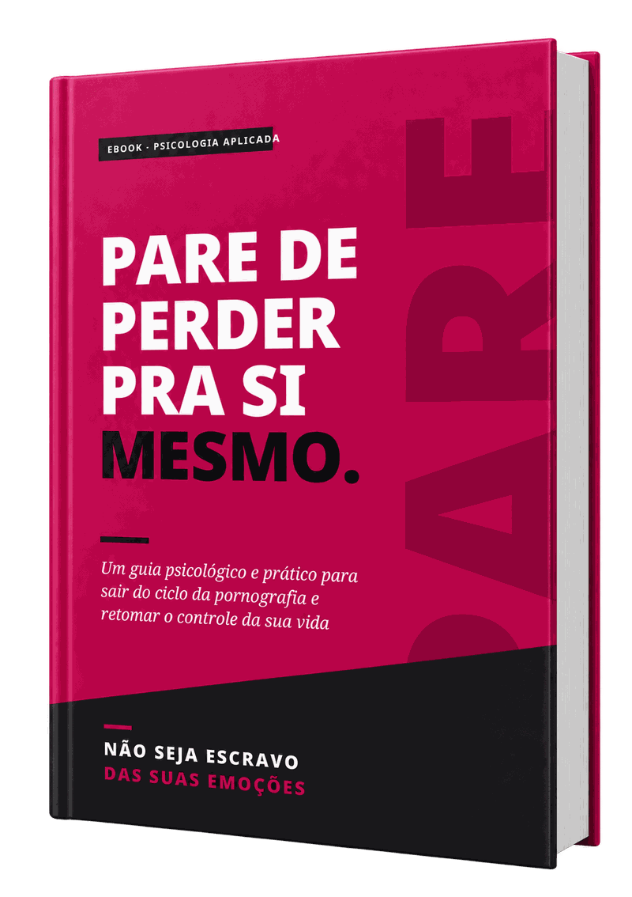

Veja o depoimento de quem adquiriu



Para quem quer fechar de vez aquela aba anônima e parar de apagar o histórico toda noite. Um plano prático de 30 dias, com técnicas para usar no momento exato da vontade. Acesso imediato, direto no seu e-mail.
Você vai retomar o controle sobre o hábito que te faz perder pra si mesmo em poucas semanas, mesmo se já tentou parar sozinho dezenas de vezes e sempre voltou. E não vai ser na base do grito nem da culpa.
Pense num cara comum. Trabalha, cumpre as obrigações, ninguém desconfia de nada. Mas à noite, porta trancada e celular na mão, abre aquela aba anônima "só mais uma vez". Depois apaga o histórico, sente aquele vazio e jura que segunda-feira para. Na quarta, está lá de novo. Se você se reconheceu, saiba que não está sozinho e não é fraco.
O que te prende é um ciclo de quatro etapas: gatilho, fissura, alívio e culpa. O tédio, a ansiedade, a solidão ou o cansaço disparam a vontade. A vontade cresce até você ceder. O alívio dura minutos. A culpa vem logo depois, e ela mesma vira o próximo gatilho. Por isso a força de vontade sozinha falha: ela é uma bateria, e o ciclo te encontra sempre quando ela está no fim.
A virada acontece quando você entende uma coisa: o problema raramente é o hábito em si. O problema é o que ele está fazendo por você. Ele virou a forma automática de lidar com as emoções que você não sabe onde colocar. Está regulando suas emoções no seu lugar. Seu cérebro não está quebrado, está treinado. E o que foi treinado pode ser retreinado.
Você não precisa de mais uma promessa nem de mais um contador de dias zerado. Precisa de um método: entender o ciclo, mudar o ambiente, saber o que fazer quando a vontade aperta e como levantar quando cair. É isso que este guia te entrega, baseado em psicologia comportamental, TCC e atenção plena.
"Você não é fraco. Você está preso num ciclo que foi treinado milhares de vezes."


Editora VkHub
A maioria das tentativas falha porque ataca só o comportamento: "é só não fazer". Este guia vai na causa, que é a fuga emocional. Primeiro você entende o ciclo e descobre quais emoções disparam a vontade. Depois muda o ambiente para que cair dê trabalho, aprende técnicas para o momento exato da vontade e um protocolo para lidar com a recaída sem desistir. Tudo baseado em terapia cognitivo-comportamental e atenção plena, com exercícios curtos e um plano de 30 dias. Força de vontade é uma bateria. Ambiente é uma tomada.
E pense no que acontece se nada mudar. Daqui a 1 ano, mais um ano de segredo e de promessas quebradas. Em 5, a energia drenada, o foco e a autoestima no chão, o relacionamento esfriando sem você saber explicar por quê. Em 10, a sensação de que outra parte sua manda mais do que você. Você não precisa vencer a vida inteira hoje. Precisa vencer a próxima vontade. E dá para começar agora.
De R$ 97,00
por somente
Garantia incondicional de 7 dias. Leia, aplique os exercícios e, se não fizer sentido para você, peça o reembolso dentro do prazo. Sem perguntas.